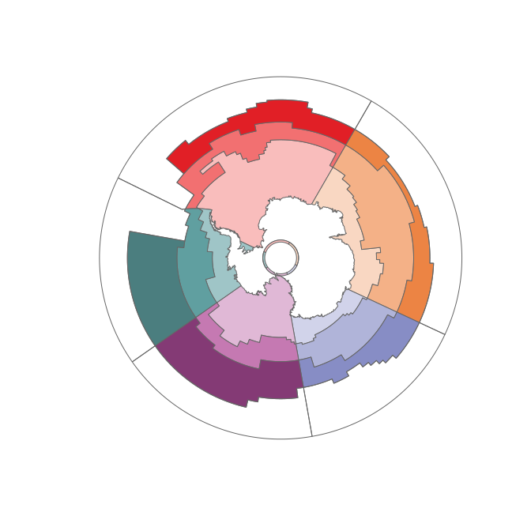
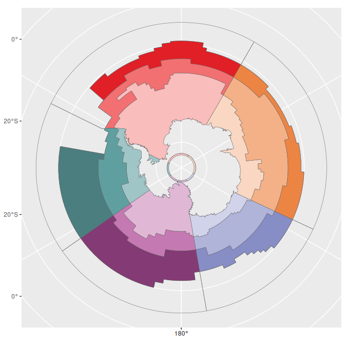
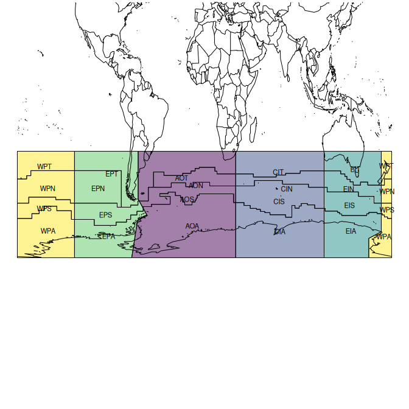

The goal of measoshapes is to provide the regions of the Marine Ecosystem Assessment for the Southern Ocean (MEASO): five sectors (Atlantic, Central Indian, East Indian, West Pacific, East Pacific), each with three zones (Antarctic, Subantarctic, Northern), as described in the MEASO Summary for Policymakers (see References).
The current version of the regions is 06. Version 05 is kept as it was released.
Website: https://australianantarcticdivision.github.io/measoshapes/
Installation
To install measoshapes from Github use
## install.packages("remotes")
remotes::install_github("AustralianAntarcticDivision/measoshapes")Map
To map the regions with base plotting (with the sf package). There is one row per region, with its name, label, sector, zone, and fill colour. The _coastline form has the Antarctic continent cut out.
library(measoshapes)
library(sf)
measo <- measo_regions06_coastline
plot(st_geometry(measo), col = measo$fill, border = "grey40")
The temperate (T) regions in the north of each sector are outside MEASO and have no fill.
sf::st_drop_geometry(measo)
#> # A tibble: 20 × 5
#> name label sector zone fill
#> * <chr> <chr> <chr> <chr> <chr>
#> 1 AOA Antarctic Atlantic Atlantic Antarctic #F9BDBC
#> 2 AOS Subantarctic Atlantic Atlantic Subantarctic #F27071
#> 3 AON Northern Atlantic Atlantic Northern #E11F26
#> 4 AOT Temperate Atlantic Atlantic <NA> <NA>
#> 5 CIA Antarctic Central Indian CentralIndian Antarctic #F9D7C2
#> 6 CIS Subantarctic Central Indian CentralIndian Subantarctic #F4B187
#> 7 CIN Northern Central Indian CentralIndian Northern #EC8444
#> 8 CIT Temperate Central Indian CentralIndian <NA> <NA>
#> 9 EIA Antarctic East Indian EastIndian Antarctic #D1D3EA
#> 10 EIS Subantarctic East Indian EastIndian Subantarctic #B0B4D9
#> 11 EIN Northern East Indian EastIndian Northern #878DC5
#> 12 EIT Temperate East Indian EastIndian <NA> <NA>
#> 13 WPA Antarctic West Pacific WestPacific Antarctic #E0B8D6
#> 14 WPS Subantarctic West Pacific WestPacific Subantarctic #C579B2
#> 15 WPN Northern West Pacific WestPacific Northern #843A75
#> 16 WPT Temperate West Pacific WestPacific <NA> <NA>
#> 17 EPA Antarctic East Pacific EastPacific Antarctic #9FC5C7
#> 18 EPS Subantarctic East Pacific EastPacific Subantarctic #609FA0
#> 19 EPN Northern East Pacific EastPacific Northern #4B7E7F
#> 20 EPT Temperate East Pacific EastPacific <NA> <NA>Map with ggplot2
To use the literal fill colours we need scale_fill_identity(), this is ggplot’s “straight-through” mechanism.
library(ggplot2)
ggplot(measo, aes(fill = fill)) + geom_sf(colour = "grey40") + scale_fill_identity()
Map with SOmap
The SOmap package provides some simpler ways of creating and adding to polar maps. Once a map is set up it knows what projection it is in, so we can forget about having to transform the data.
## TODO: SOplot() no longer adds to the SOmap() plot with current SOmap, not evaluated for now
library(SOmap)
SOmap(trim = -32) ## set up a polar map
## set overlay to half-transparent
SOplot(st_geometry(measo), border = NA, col = scales::alpha(measo$fill, 0.75))Data sets
There is no code in the measoshapes package, but the package records the creation of each data set using standard R mechanisms (see ‘data-raw/’).
Version 06, one row for each of the 20 regions:
-
measo_regions06polar Lambert Azimuthal Equal Area (use this for areas) -
measo_regions06_lllongitude/latitude -
measo_regions06_coastline,measo_regions06_ll_coastlinewith the Antarctic continent cut out -
measo_names06thename,label,sector,zone, andfillof each region
The longitude/latitude polygons are defined in planar longitude/latitude: boundaries follow parallels and meridians, rather than great circles. The polar forms are densified (to 0.2 degree) so they follow the same boundaries. In longitude/latitude the West Pacific regions are in two parts, either side of the anti-meridian.
To export to shapefile:
st_write(measo_regions06_ll_coastline, "myfile.shp")Files
The version 06 regions are also provided as files in ‘inst/extdata’, created by ‘data-raw/export.R’, with one row for each region (20 rows) and the same columns. They are also published on the website.
-
measo_regions06.parquet,.fgbpolar Lambert Azimuthal Equal Area (equivalent to EPSG:6932), use this for areas -
measo_regions06_ll.parquet,.fgb,.geojsonlongitude/latitude (OGC:CRS84) -
measo_regions06_epsg_3031.parquet,.fgbAntarctic Polar Stereographic (EPSG:3031), e.g. for Quantarctica -
measo_regions06.qmla QGIS style with the fill colours and labels
f <- system.file("extdata/measo_regions06.parquet", package = "measoshapes")
x <- sf::read_sf(f)The geopackages (measo_regions.gpkg, measo_regions_ll.gpkg, measo_regions_epsg_3031.gpkg) are version 05 files, kept as they were.
Version 05
Version 05 is kept as it was released:
-
measo_regions05,measo_regions05_ll,measo_regions05_coastline,measo_regions05_ll_coastlinethe 24 polygons (geometry only) -
measo_namesthename,sector,zone, andfillof each polygon, in the same order
WestPacific is split at the anti-meridian, so its names appear twice and measo_names is not a key. To join the names to the geometry, group the features by name (removing the seam at the anti-meridian) and join to the distinct names. The two WPA rows of measo_names have different fills (row 1 is a known error), so this takes the first.
library(dplyr)
measo05 <- measo_regions05 %>% group_by(name) %>% summarize() %>%
inner_join(distinct(measo_names, name, .keep_all = TRUE), "name")
#> old-style crs object detected; please recreate object with a recent sf::st_crs()
#> old-style crs object detected; please recreate object with a recent sf::st_crs()The northern regions are assigned codes that include “T” for temperate, but they aren’t part of MEASO. They share a sector but have no assigned zone.
## label positions from the (equal area) polar form
cds <- st_coordinates(st_transform(st_centroid(measo_regions05), 4326))
#> old-style crs object detected; please recreate object with a recent sf::st_crs()
#> old-style crs object detected; please recreate object with a recent sf::st_crs()
#> old-style crs object detected; please recreate object with a recent sf::st_crs()
par(mar = rep(0.2, 4))
plot(st_geometry(measo_regions05_ll), reset = FALSE,
col = colourvalues::colour_values(measo_names$sector, alpha = 0.5))
#> old-style crs object detected; please recreate object with a recent sf::st_crs()
#> old-style crs object detected; please recreate object with a recent sf::st_crs()
#> old-style crs object detected; please recreate object with a recent sf::st_crs()
text(cds, lab = measo_names$name, cex = 0.7)
maps::map(add = TRUE)
References
The MEASO assessment areas (sectors and zones) are described in the MEASO Summary for Policymakers (Figure 5, “MEASO assessment areas”, adapted from McCormack et al. 2021). See also citation("measoshapes").
- Constable, A.J., J. Melbourne-Thomas, M.M.C. Muelbert, S. McCormack, M. Brasier, J.A. Caccavo, R.D. Cavanagh, S.M. Grant, H.J. Griffiths, J. Gutt, S.F. Henley, J. Höfer, A.B. Hollowed, N.M. Johnston, S.A. Morley, E.J. Murphy, M.H. Pinkerton, I.R. Schloss, K.M. Swadling, A.P. Van de Putte (2023) Marine Ecosystem Assessment for the Southern Ocean: Summary for Policymakers. Integrated Climate and Ecosystem Dynamics in the Southern Ocean, Scientific Committee on Antarctic Research, Scientific Committee on Oceanic Research, Integrated Marine Biosphere Research. https://doi.org/10.5281/zenodo.8359585
- McCormack, S.A., J. Melbourne-Thomas, R. Trebilco, J.L. Blanchard, B. Raymond, A. Constable (2021) Decades of dietary data demonstrate regional food web structures in the Southern Ocean. Ecology and Evolution 11(1): 227–241. https://doi.org/10.1002/ece3.7017
Earlier MEASO documents, from the time of versions 03 to 05 of the regions:
- Brasier, M.J., A. Constable, J. Melbourne-Thomas, R. Trebilco, H. Griffiths, A. Van de Putte, M. Sumner (2019) Observations and models to support the first Marine Ecosystem Assessment for the Southern Ocean (MEASO). Journal of Marine Systems 197: 103182. https://doi.org/10.1016/j.jmarsys.2019.05.008
- Constable, A., J. Melbourne-Thomas, R. Trebilco, M. Brasier (2018) Marine Ecosystem Assessment for the Southern Ocean (MEASO). SC-CCAMLR 2018 Background Paper, SC-CAMLR-XXXVII/BG/22. https://figshare.utas.edu.au/articles/report/SC-CCAMLR_2018_Background_Paper_Marine_Ecosystem_Assessment_for_the_Southern_Ocean_MEASO_/23193956
- Constable, A., J. Melbourne-Thomas, R. Trebilco, M. Sumner, M. Brasier (2018) The role of models in facilitating the first Marine Ecosystem Assessment for the Southern Ocean (MEASO). Australian Coastal and Oceans Modelling and Observations meeting, Canberra, October 2018. https://figshare.utas.edu.au/articles/conference_contribution/The_role_of_models_in_facilitating_the_first_Marine_Ecosystem_Assessment_for_the_Southern_Ocean_MEASO_/23154533
Please note that the ‘measoshapes’ project is released with a Contributor Code of Conduct. By contributing to this project, you agree to abide by its terms.